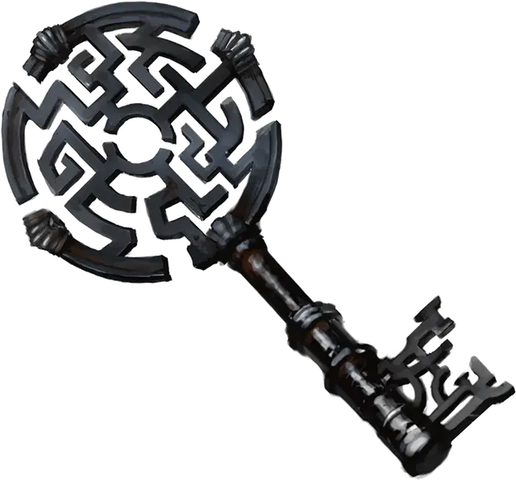

Ключ лазутчика
Infiltrator’s Key
Чудесный предмет, легендарный (требуется настройка)

Рекомендованная стоимость от 50 001 зм
Эта мифриловая отмычка была выкована с использованием крови двенадцати мастеров-воров, казненных за попытку кражи магических предметов в эпоху Арканума.
Дремлющий. Будучи в дремлющем состоянии ключ лазутчика даёт следующие преимущества:
- Ключ можно использовать как воровской инструмент для вскрытия замков. При использовании ключа вы считаетесь владеющим воровскими инструментами, и вы получаете преимущество на проверки совершаемые для вскрытия замков.
- Пока вы владеете ключом, ваши шаги приглушены, что даёт вам преимущество на проверки Ловкости (Скрытность) совершаемых, чтобы передвигаться бесшумно.
Пробуждённый. Когда ключ проникновений достигает пробуждённого состояния, он приобретает следующие свойства:
- Держа ключ, вы можете использовать бонусное действие, чтобы превратить ключ в магический кинжал или обратно в ключ. В то время как ключ находится в форме кинжала, вы получаете бонус +1 к атаке и броскам урона, совершаемым с его помощью, и он возвращается в вашу руку сразу же после того, как вы используете его для дальнобойной атаки.
- Держа ключ, вы можете использовать действие, чтобы с его помощью наложить одно из следующих заклинаний: бесследное передвижение [pass without trace], невидимость [invisibility], открывание [knock] или смена обличья [alter self]. После того, как заклинание было наложено с помощью ключа, оно не может быть наложено им повторно до следующего рассвета.
Возвышенный. Когда ключ проникновений достигает возвышенного состояния, он приобретает следующие свойства:
- Бонусным действием вы можете прикоснуться ключом к полу, стене или потолку толщиной не более 5 футов и создать магической проход на поверхности. Когда вы создаете проход, вы определяете его длину и ширину, до 10 футов для каждой из сторон. Проход существует до тех пор, пока ключ не пройдет через него на другую сторону, после чего проход исчезает (если существо находится в проходе, когда он закрывается, существо безопасно перемещается в ближайшее свободное пространство). Ключ не может быть использован для создания другого прохода до следующего рассвета.
- Держа ключ, вы можете использовать Действие, чтобы с его помощью наложить одно из следующих заклинаний: газообразная форма [gaseous form], переносящая дверь [dimension door] или фальшивый двойник [mislead]. После того, как заклинание было наложено с помощью ключа, оно не может быть наложено им повторно до следующего рассвета.